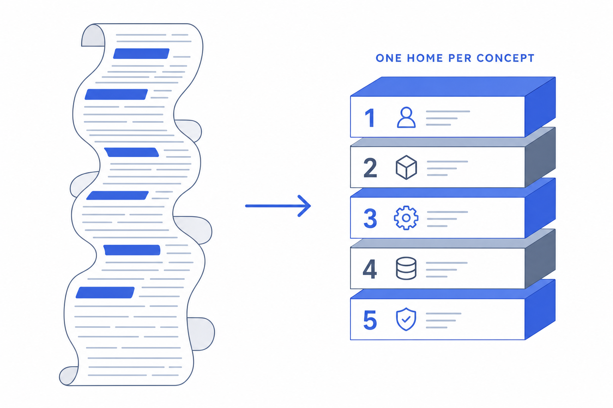
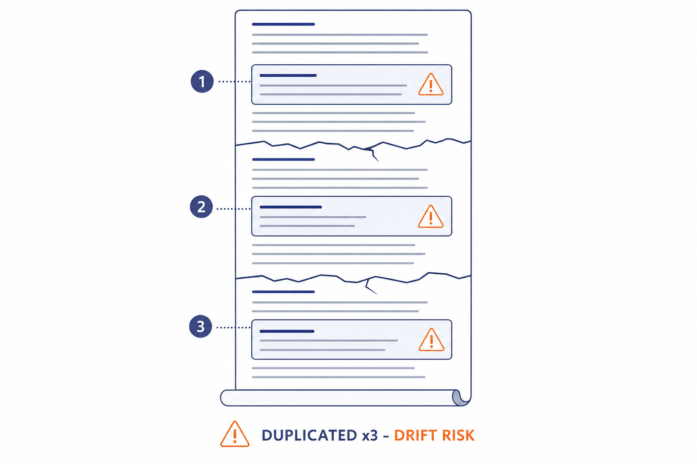
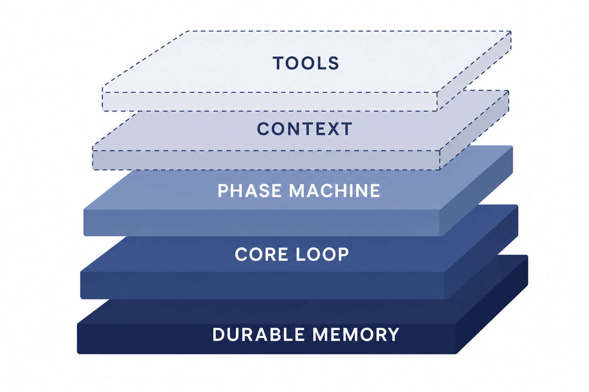
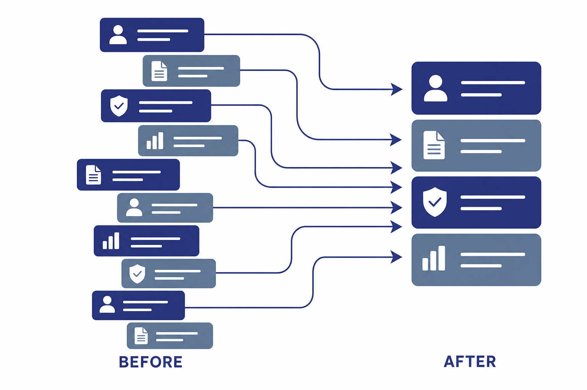

Plan: Orchestrator System Prompt Refactor — Dedupe, Reorder, Conditionalize

Purpose
Restructure the runtime-assembled Orchestrator system prompt builder
(lib/repo_builder/orchestrator/system_prompt.ex) to (1) consolidate every
duplicated concept into a single authoritative home, (2) reorder sections so concepts
precede the mechanics that depend on them — with the durable-workstream memory model
established first, (3) conditionally omit repo-dependent machinery when no working
directory / project is bound, and (4) make tool descriptions in the prompt terse while
the full descriptions continue to flow through the MCP tools/list channel.
Zero behavior change: every rule that exists today survives, expressed once.
Problem
The prompt renders at ~34KB (current snapshot: ai_docs/orchestrator-system-prompt.md,
34,003 bytes for a no-repo orchestrator) and that cost is paid on every turn of every
session. The bloat comes from three sources:
- Repeated concepts — at least 9 mechanisms are explained 2–5 times each
(see the occurrence map below). Beyond token waste this creates drift risk: an edit to one
copy silently contradicts the others. The most extreme case:
subagent_map_block/0andworker_roles_block/0both callTemplates.list()and print the identical list twice in the same render (system_prompt.ex:367 and :519). - Double-channel tool policy —
ToolCatalogdescriptions are the MCPtools/listschema (served byorchestrator_mcp_controller.ex:52and the pi manifest) and are printed verbatim into the prompt'sAvailable toolsblock (system_prompt.ex:503-507). The model receives ~9KB of tool policy twice, and long descriptions likerun_quality_gate/start_adwcarry full workflow policy that also lives in the prose sections. - Inert sections — when no working directory is set (like the captured snapshot!), the quality gate, phase machine slash-command dispatch, cross-repo ADW mechanics, and UI/UX surface detection cannot run, yet render in full.
- Inverted ordering — the keystone concept (workstreams as durable external
memory, which makes
compact_selfsafe and underpins the drive loop, phase machine, and rehydrate-on-resume) is explained near the end (external_memory_block, line 131 of the build template), after ~130 lines of operating mechanics that assume it.

Solution
Four coordinated moves on the template (builder functions), never on a single render:
- One home per concept. Each duplicated concept gets a single authoritative prose section; other mentions become one-line cross-references or disappear. The full concept→home mapping and dedupe ledger are in Notes — they double as the reviewer's checklist that nothing was dropped.
- Terse tool block via a
summaryfield. Add an optional:summaryto eachToolCatalogtool map; the prompt's tools block renderssummary || description(one line each), while MCPtools/listand the pi manifest keep the fulldescriptionunchanged. No capability is lost: the model still receives full tool docs through the tool-schema channel. - Concept-first ordering. New layering: identity + durable-memory model → core loop (goal→decompose→drive→verify→report, incl. turn discipline) → phase machine + quality gate → context management → dispatch reference (tiers/ADWs/slash/templates) → terse tool list + rendered environment facts.
- Conditional inclusion. A
repo_bound?/1predicate (project resolved or working_dir set) gates the repo-dependent blocks (quality gate, phase-machine dispatch detail, UI/UX polish, cross-repo ADW paragraph, verify-mechanics). The no-repo render gets a two-line notice instead. Public block functions keep their arities; gating happens inbuild/1.
Estimated reduction: with-repo render ~34KB → ~23–25KB (−28%); no-repo render ~34KB → ~17–19KB (−45%). Verified empirically in Phase 6 by re-rendering both variants.

Relevant Files
Existing Files
- existing
lib/repo_builder/orchestrator/system_prompt.ex— the target: the builder template (754 lines). All block functions, ordering, and conditional gating live here. - existing
lib/repo_builder/orchestrator/tool_catalog.ex— 27 tool maps (~39.7KB); gains the optional:summaryfield. Itsdescriptionstays the MCP/pi source of truth. - existing
lib/repo_builder_web/controllers/orchestrator_mcp_controller.ex— servesToolCatalog.tools()astools/list; must remain byte-identical (usesdescription, ignoressummary). - existing
lib/repo_builder/harness/pi.ex— writesToolCatalog.pi_manifest_json/0; same invariant as the MCP controller. - existing
test/repo_builder/orchestrator/system_prompt_test.exs— string/regex assertions on prompt content; several will need moving to the with-repo build or re-anchoring to the new single homes. - existing
test/repo_builder/orchestrator/system_prompt_project_test.exs,system_prompt_primer_test.exs,system_prompt_secrets_test.exs,system_prompt_external_apis_test.exs— per-feature prompt tests; assert they still pass and gate correctly. - existing
test/repo_builder/orchestrator/ui_ux_skills_test.exs,test/repo_builder_web/live/test_orchestrator_system_prompt_test.exs,test/repo_builder/harness/orchestrator_system_prompt_flag_test.exs— other consumers of the prompt surface; re-run and re-anchor if needed. - existing
ai_docs/orchestrator-system-prompt.md— the captured render snapshot; regenerated in Phase 6 as the before/after review artifact.
New Files
- new
ai_docs/system-prompt-dedupe-ledger.md— the reviewer artifact: concept→home mapping + per-duplicate "reduced to" ledger + before/after byte counts for both render variants. - new
test/repo_builder/orchestrator/system_prompt_dedupe_test.exs— regression guard: key policy phrases occur exactly once; no-repo render omits repo-gated blocks; with-repo render includes them.
Implementation Phases
IMPORTANT: Execute every phase and task step by step, in order, top to bottom.
Status markers: [] idle · [wip] in progress · [x] complete · [f] failed. All start as []; the Build Plan workflow updates them as it works.
[x] Phase 1: Baseline & Ledger
Freeze the "before" state so every later deletion is provably a dedupe, and finalize the occurrence inventory against the live file (the map in Notes was built from a fresh read of system_prompt.ex and the 2026-07-04 snapshot; re-verify line anchors before editing).
1. Capture baseline renders
[x]Render the prompt for BOTH variants viamix run: (a) a no-repo orchestrator (%Orchestrator{harness: "fake", working_dir: nil}), (b) a repo-bound one (working_dir = platform root). Save to/tmp/…/prompt-before-norepo.mdandprompt-before-repo.mdwith byte counts.[x]Record the byte counts in the newai_docs/system-prompt-dedupe-ledger.mdheader.
2. Finalize the ledger
[x]Copy the concept→home mapping table (Notes §A) and dedupe ledger (Notes §B) intoai_docs/system-prompt-dedupe-ledger.md; walk the current file top-to-bottom and confirm no rule/occurrence is missing from the map — add any stragglers (e.g. tier-selection guidance appears in operating rules +create_agentdesc + tiers block).[x]For each of the 27 ToolCatalog tools, draft its one-linesummaryin the ledger, and mark which sentences of its full description are policy that must move to (or already exists in) a prose home.
3. Testing Strategy
Pure documentation phase — validation is that the baseline artifacts exist and the ledger covers every line of the current template.
[x]test -s ai_docs/system-prompt-dedupe-ledger.md— ledger written with baseline byte counts.[x]mix test test/repo_builder/orchestrator/— suite still green (nothing changed yet).
[x] Phase 2: ToolCatalog summary Field
Give every tool a terse one-liner for the prompt while leaving the MCP/pi channel untouched. This is mechanically independent of the restructure, so it lands first.
1. Add the field
[x]Extend the tool typespec intool_catalog.ex(~line 12) with optionalsummary: String.t()and addToolCatalog.prompt_line/1(or equivalent) returningsummary || description.[x]Write the 27 summaries from the ledger. Rules: ≤ 2 lines; say what it does + when to reach for it; policy sentences (verify-first, selection ladders, safety rationale) point to the prose home instead of restating it (e.g.start_adw: "Launch an AI Developer Workflow run; returns a run id forcheck_adw. Selection ladder: see ADW section."). Cross-reference wording must match the final section titles chosen in Phase 3.[x]Pointsystem_prompt.extools_block/0at the summary line; confirmorchestrator_mcp_controller.extool_descriptor/1andToolCatalog.pi_manifest_json/0still emit the fulldescription(add a test pinning this).
2. Testing Strategy
ExUnit: assert prompt uses summaries, MCP descriptor unchanged. Edge case: a tool with no summary falls back to description (so a future tool added without a summary never renders blank).
[x]mix test test/repo_builder/orchestrator/ test/repo_builder_web/— catalog + controller tests green.[x]mix runrender check: theAvailable toolsblock is one line per tool and the with-repo render shrank ≥ 5KB vs baseline.
[x] Phase 3: Restructure the Template (dedupe + reorder)
The core move: rewrite build/1's heredoc and the block functions to the new layering,
consolidating each concept into its single home per the mapping table. Public block functions
(leader_expertise_block/0, phased_delivery_block/0, quality_gate_block/0,
external_memory_block/0) keep their names and arities — content moves, signatures don't.

1. New section order in build/1
[x]§1 Identity + durable memory: identity paragraph, thenexternal_memory_block()promoted here (absorbing the compact_self/rehydrate copy fromcontext_management_blocklines 487-491 and the safety rationale currently in thecompact_selftool description).[x]§2 Core loop:leader_expertise_block()(goal → decompose → drive → verify → report) absorbing the merged turn-discipline text: message-queue semantics + "one step per turn / don't poll / re-engaged on return" + the closing "Working rhythm" paragraph (deleted as a separate section). The single authoritative VERIFY rule lives here.[x]§3 Phase machine + quality gate:phased_delivery_block()thenquality_gate_block(); the per-stage bullets reference the §2 VERIFY rule instead of restating it; the test-stage bullet's gate walkthrough shrinks to one line + "see Quality gate".[x]§4 Context management:context_management_block()keeps ONLY worker-context policy (compact vs clear, graceful handover, report_cost watching) with a one-line cross-ref to §1 for self-compaction.[x]§5 Dispatch reference: worker tiers, single merged worker-templates block (deleteworker_roles_block/0; keepsubagent_map_block/0, its empty-state message must still name builder/reviewer/tester/documenter/debugger to preserve the existing test anchor), ADW section (the ONE home for the selection ladder + decompose-into-runs + cross-repo working_dir rules, moved out of operating rules), slash commands, research-tools grant, ultrathink rule, tier self-unblock (get_config/configure_tier/set_orchestrator_config),get_logsguidance.[x]§6 Rendered facts: terse tools block, harnesses, own harness, working dir, primer/stack/secrets/APIs, expertise, reflections.
2. Execute the dedupe ledger
[x]Apply every row of the ledger (Notes §B): delete/reduce each duplicate exactly as recorded; where wording differs between copies, keep the union of constraints (e.g. the ≈80% threshold, the "bounded by the stall limit" qualifiers) so no rule weakens.[x]Update the ledger with the final "reduced to" wording per row (the reviewer diffs old→new against it).[x]Preserve all injection points:{{TOOLS}}-equivalenttools_block(),harnesses_block(), ADW/slash discovery, tiers, primer/stack/secrets/APIs/expertise/reflections — nothing hardcoded that varies per render.
3. Testing Strategy
ExUnit string/regex assertions re-anchored to the new homes. Edge cases: empty-state fallbacks (no templates, no ADWs, no slash commands) still render their fallback lines; ordering-sensitive regexes (~r/mutation.*pre_merge/s, ~r/80%.*clear_context/s) still match after reordering.
[x]mix test test/repo_builder/orchestrator/ test/repo_builder_web/live/test_orchestrator_system_prompt_test.exs test/repo_builder/harness/— all prompt-surface tests green (updating assertions where they anchored to a removed duplicate, per the ledger).[x]mix runrender diff vs baseline: manually confirm each removed passage appears in the ledger as a dedupe row.
[x] Phase 4: Conditional Inclusion (repo-gated blocks)
Gate repo-dependent machinery behind a working-directory/project presence check so the
no-repo orchestrator stops carrying inert policy. Gating lives in build/1; the public
block functions stay pure and arity-0 (asserted elsewhere).
1. The gate
[x]Addrepo_bound?/1: true whenresolve_project/1returns a project ORworking_diris a non-empty binary (matching the existingworking_dir_block/1branching).[x]Gate when unbound:quality_gate_block(), the phase-machine dispatch detail + UI/UX polish paragraphs ofphased_delivery_block()(split the block or gate it whole — keep workstream/decompose guidance available only if it can run without a repo; if/feature-style dispatch is repo-only, gate the whole block and note it), the cross-repo ADW paragraph, andinspect_repo-mechanics detail (keep the abstract "verify, never trust a self-report" rule in §2 unconditionally).[x]Unbound render gets a two-line notice: repo-dependent protocols (phased delivery dispatch, quality gate, UI/UX) are inactive until the operator sets a working directory (Settings → General) — merged into the existing no-dir working-directory copy (system_prompt.ex:225-233).[x]Confirm already-conditional blocks (primer, stack, secrets, APIs, expertise, reflections) are unchanged and still empty-string on no-project.
2. Testing Strategy
Two-variant rendering in ExUnit: build with and without a working_dir (tmp dir) and assert block presence/absence. Edge cases: working_dir set but no registered project (unbound-with-dir renders repo-gated blocks — it has a real tree); orchestrator with project_id but the project row deleted (falls to unbound).
[x]mix test test/repo_builder/orchestrator/system_prompt_dedupe_test.exs— new presence/absence tests green (file created here or in Phase 5; fine to co-develop).[x]mix test— full suite green; any existing test that built an unbound orchestrator but asserted a now-gated block (e.g. the quality-gate test insystem_prompt_test.exs:119) is updated to build repo-bound.
[x] Phase 5: Regression Guards
Lock the refactor in so duplicates can't silently regrow and the gate can't silently break.
1. Dedupe guard test
[x]Createtest/repo_builder/orchestrator/system_prompt_dedupe_test.exs: for a with-repo render, assert sentinel phrases occur EXACTLY once — e.g."rehydrate-on-resume"rationale, the ADW selection ladder ("trivial change"), the subagent-template list header,"never trust a worker's self-report"-class phrasing (pick the final canonical wording), the fix-loop walkthrough.[x]Assert section ORDER: durable-memory section index < core-loop < phase-machine < context-management < tools block (via:binary.match/2offsets).[x]Assert no-repo render: omits quality gate/UI-UX/cross-repo text, includes the inactive-protocols notice, still includes identity, memory model, core loop, tools.
2. Testing Strategy
The guard test IS the strategy; also sweep every other prompt-consuming test file (driver, server, live view, harness-flag, ui_ux_skills) for stale anchors.
[x]mix test— entire suite green.[x]grep -rn "prompt =~" test/ | wc -lsanity sweep — every prompt assertion reviewed against the new template (note count in ledger).
[x] Phase 6: Verify, Measure, Snapshot
Prove the two goals — nothing lost, bytes saved — and refresh the review artifacts.
1. Measure & snapshot
[x]Re-render both variants; record after-byte-counts and % reduction in the ledger (targets: with-repo −25% or better, no-repo −40% or better; if missed, report actuals honestly rather than trimming policy to hit a number).[x]Regenerateai_docs/orchestrator-system-prompt.mdfrom the new builder (same header format, new size), noting the variant rendered.[x]Final ledger pass: every concept row has a home; every dedupe row names its "reduced to" text; a reviewer can walk old-snapshot → ledger → new-snapshot and account for every deleted line.
2. Testing Strategy
The project's full green gate (typed-Elixir standard: format, strict Credo with the @spec gate, TypeCheck-compatible compile, Dialyzer, full suite).
[x]mix format --check-formatted— formatting clean.[x]mix credo --strict— no new issues (incl. the @spec gate on any new public function).[x]mix dialyzer— clean against the existing ignore file.[x]mix test— full suite green.
Validation Commands
Execute these commands to validate the entire plan is complete:
[x]mix test— full suite green, including the new dedupe/gating guard tests.[x]mix credo --strict && mix dialyzer && mix format --check-formatted— the typed-Elixir green gate holds.[x]mix test test/repo_builder/orchestrator/system_prompt_dedupe_test.exs— sentinel phrases unique; section order enforced; no-repo render gated.[x]test -s ai_docs/system-prompt-dedupe-ledger.md && grep -q "after" ai_docs/system-prompt-dedupe-ledger.md— ledger complete with before/after byte counts for both variants.[x]grep -c "description" lib/repo_builder_web/controllers/orchestrator_mcp_controller.ex— MCP descriptor still serves full descriptions (paired with its pinning test).
Notes
§A — Concept → single-home mapping (the verification contract)
Occurrence anchors reference lib/repo_builder/orchestrator/system_prompt.ex (SP) at its
current 754-line revision, lib/repo_builder/orchestrator/tool_catalog.ex (TC, by tool name),
and the rendered snapshot for context. Re-verify anchors in Phase 1 before editing.
| # | Concept | Current occurrences | New single home | Other mentions become |
|---|---|---|---|---|
| 1 | ADW selection ladder (trivial→plan_build … scout/parallel) + decompose-into-runs + cross-repo working_dir rules | SP operating rules :68-85; TC start_adw description (full ladder restated); ADW-types listing context :103-104 | §5 Dispatch reference → "ADWs" prose | start_adw summary: launch + run id + "ladder: see ADW section"; ADW-types listing keeps only the two-group list |
| 2 | compact_self safety / rehydrate-on-resume / workstreams durable | SP context_management :487-491; SP external_memory_block :654-668; TC compact_self description | §1 Durable memory (promoted external_memory_block) | context-mgmt: one cross-ref line; compact_self summary: "Compact your own context; safe — see Durable memory" |
| 3 | One step per turn / don't poll / re-engaged on worker return | SP drive loop :551-553; SP message-queue block :134-148; SP working-rhythm :150-154 | §2 Core loop → turn discipline | working-rhythm section deleted (its ADW "observe, don't interfere" line moves to §5 ADWs); queue block merged in |
| 4 | VERIFY against the real tree, never trust a self-report | SP drive loop :548-550; SP phased delivery :584-585; TC report_complete; TC record_stage; TC inspect_repo | §2 Core loop → single canonical VERIFY rule | phase machine: "verify first (Core loop)"; three tool summaries drop the restatement |
| 5 | Subagent template roster | SP subagent_map_block :100-101; SP worker_roles_block :126-127 (identical Templates.list() print); TC list_agent_templates | §5 Dispatch reference → one "Worker templates & roles" block | worker_roles_block/0 deleted (empty-state role names folded into the kept block); tool summary: "on-demand form of the template list" |
| 6 | clear_context vs compact_agent decision rule (+ ≈80% proactive rule) | SP context mgmt :480-491; TC clear_context; TC compact_agent | §4 Context management | tool summaries: one-liners naming the counterpart tool |
| 7 | Quality-gate fix loop (red stage → fix worker w/ diagnostics → re-run until green, stall-bounded) + two-call protocol | SP phased delivery test bullet :590-594; SP quality_gate_block :636-639; TC run_quality_gate (full protocol) | §3 Quality gate block | test-stage bullet: one line + cross-ref; tool summary: two-mode hint + cross-ref |
| 8 | Focus discipline (set_focus before spend; one per scope; clear only when verified) | SP drive loop :554-559; TC set_focus; TC clear_focus | §2 Core loop | tool summaries terse |
| 9 | Worker tier selection (fast/main/heavy/leader semantics) | SP operating rules :44-46; TC create_agent; tiers listing :97-98 | §5 Dispatch reference, directly above the rendered tier roster | create_agent summary keeps only "prefer category" |
| 10 | Goal/progress ledger semantics (durable goal, record every turn, stall/replan) | SP drive loop :541-547,560-562; TC set_goal/record_progress/get_ledger | §2 Core loop | tool summaries terse |
| 11 | Workstream stage-machine record/advance semantics | SP phased delivery :583-597; TC record_stage/plan_phases/create_workstream/get_workstream/list_workstreams | §3 Phase machine (+§1 for the memory-index start-of-turn habit) | tool summaries terse |
§B — Dedupe ledger (seeded; completed in Phases 1 & 3)
One row per deleted or reduced passage. The build phases append the final replacement wording so a reviewer can pair every diff deletion with a row. Seed rows: the 11 concepts above each produce 1–4 ledger rows (one per non-home occurrence) — ~25 rows expected. Also ledger'd: the 27 tool-description → summary reductions (policy sentences mapped to their prose home or marked "retained in MCP description only").
§C — Design decisions & rationale
- Why a
summaryfield instead of trimming descriptions:ToolCatalog.tools()is served as the MCPtools/listschema (orchestrator_mcp_controller.ex:52) and the pi extension manifest (pi.ex:51). Trimmingdescriptionwould change the tool-calling surface the model sees — a behavior change. The summary field keeps both channels correct: full docs where the harness expects tool schemas, terse lines in the prompt. - Public block functions keep arity 0: their
@docs say "Public so it can be asserted" — tests and possibly the driver reference them. All conditional logic goes inbuild/1, not into the blocks. - Repo-bound predicate mirrors existing branching:
working_dir_block/1already distinguishes project / bare-dir / none;repo_bound?/1is the same tri-state collapsed to a boolean (project OR dir ⇒ bound). A bare working_dir without a registered project still gets the repo machinery — it has a real tree to verify against. - The snapshot is a no-repo render:
ai_docs/orchestrator-system-prompt.md(34,003 bytes) was rendered with "No working directory is set" — meaning today's 34KB already excludes primer/stack/expertise. A with-repo render is larger; both variants must be measured in Phases 1/6. - Union-of-constraints rule for merging: where duplicate copies differ in detail (thresholds, boundedness qualifiers, "operator messages take precedence"), the merged home keeps every constraint. Reviewer checks this against the ledger.
- Rejected: extracting the prompt to an EEx template file (bigger blast radius, loses the asserted-block structure); rendering tool docs only via MCP and dropping the prompt tools block entirely (the pi/fake harnesses' prompt-only consumers and tests still rely on the block; a terse list is the safe midpoint).
- Token estimate basis: tools block ≈ 9.2KB → ≈ 2.5KB (−6.7KB); dedupes ≈ −3.5KB; no-repo gating additionally ≈ −6KB (quality gate 1.2KB + phased delivery 2.6KB + cross-repo/ADW detail + verify mechanics). Net: with-repo ≈ −10KB (−28%), no-repo ≈ −15KB (−45%). Phase 6 replaces estimates with measurements.
§D — Open decisions surfaced (QUESTIONABLE=false → resolved here, revisit in review)
- Gate
phased_delivery_blockwhole or split? Default: split — workstream decomposition + external-memory habits stay unconditional (they work without a repo); the slash-command stage dispatch, quality-gate walkthrough, and UI/UX paragraphs gate on repo-bound. If splitting bloats the code, gating the whole block with a one-line unconditional pointer is acceptable. - Does the Driver or Server inject any of these blocks separately?
server.exreferences SystemPrompt; Phase 3 must check whether any block function is called outsidebuild/1before moving content between blocks. - Existing tests that assert gated content on unbound orchestrators (e.g. quality-gate assertions in
system_prompt_test.exs:119-127with a no-dir fake orchestrator) switch to a repo-bound fixture — that is a test-fixture change, not a behavior change.
Amendments
2026-07-04 — Plan executed in full (all 6 phases); gate green
What was built: all phases completed as specified — ToolCatalog gained
summary + prompt_line/1 (29 summaries, 8 fallbacks);
build/1 reordered to the concept-first layering with worker_roles_block/0
deleted and the message-queue / working-rhythm sections merged into the core loop;
repo_bound?/1 gates phased delivery, quality gate, and the cross-repo ADW paragraph;
14 new guard tests in system_prompt_dedupe_test.exs; ledger at
ai_docs/system-prompt-dedupe-ledger.md; snapshot regenerated.
Measured result: no-repo render 33,983 → 20,781 bytes (−38.9%); with-repo 39,412 → 30,748 bytes (−22.0%). Slightly under the −40%/−25% targets — the with-repo render carries irreducible per-project content (primer/stack/expertise/reflections); no policy was trimmed to hit a number.
Deviations from the plan text: (1) the tool_manifest.json
byte-stability fixture (unknown to the plan) was regenerated — 29 insertions, zero deletions,
summary keys only; (2) three existing tests were re-anchored (conductor line, repo-bound
quality-gate fixture, two stale "Worker roles (data-driven" anchors) exactly as the plan's
Questionables §D predicted; (3) validation ran the full typed gate — compile/format/credo
strict/dialyzer clean, tests 1738 passing (one known-flaky SecretRedactionE2ETest
failure under full-suite load passes in isolation). Work left uncommitted per the
/implement workflow.